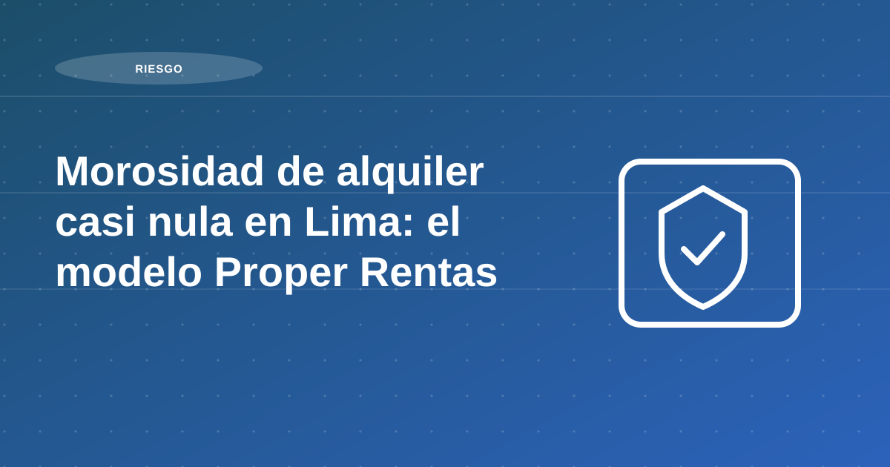

Morosidad de alquiler casi nula en Lima: el modelo Proper Rentas para propietarios que quieren alquilar su departamento sin riesgos

La morosidad de alquiler es uno de los factores que más preocupa a cualquier propietario que busca generar ingresos con su inmueble. Cuando los pagos se atrasan, no solo se afecta el flujo de caja, también se incrementa el riesgo de procesos legales costosos y la incertidumbre de no saber cuándo se recibirá la renta.
En Lima, donde la demanda por vivienda de largo plazo sigue creciendo, contar con un agente inmobiliario o un corredor inmobiliario que garantice una recaudación de alquileres segura y puntual es clave para proteger tu inversión.
En este contexto, Proper Rentas se posiciona como una PropTech especializada en todo el corretaje de alquileres y, sobre todo, en la administración integral de propiedades. Al 3er trimestre del 2025 gestionamos más de 700 unidades en Lima, incluyendo departamentos y edificios completos, con un enfoque 100 % residencial. Nuestro objetivo es que el propietario no se preocupe por nada: no solo encontramos al inquilino y cobramos la renta, sino que gestionamos el activo de principio a fin, incluyendo incidencias, reparaciones, gestión de garantías y todo lo que la propiedad necesite para preservar y aumentar su valor.
Tabla de contenidos
- Resultados que hablan por sí mismos
- PropTech para una recaudación sin fricciones
- Proceso de selección: el filtro que previene la morosidad
- Captación masiva y atención inmediata
- Administración integral para que el propietario no se preocupe por nada
- Manejo profesional de atrasos y salidas
- Beneficios para el propietario que quiere alquilar su departamento en Lima
- Conclusión: alquilar tu departamento sin morosidad es posible
Resultados que hablan por sí mismos
El análisis de nuestra cartera demuestra que la morosidad de alquiler se mantiene controlada incluso en un portafolio de gran escala con cientos de departamentos:
Estos resultados evidencian que la recaudación de alquileres es rápida, confiable y prácticamente libre de atrasos prolongados.
- En los primeros 3 días posteriores al vencimiento, apenas un 1,5 % de las unidades presenta atrasos.
- A los 7 días, la cifra cae a cerca de 0,4 %.
- Antes de los 31 días, la morosidad desaparece y se ubica en 0 %.
Recomendación operativa: estandariza el proceso previo a firma y documenta cada validación. El objetivo no es solo elegir rápido, sino elegir mejor y reducir incidentes posteriores.
PropTech para una recaudación sin fricciones
El corazón de nuestro modelo es un sistema de cobranza y recaudación 100 % digital.
Los inquilinos pagan su renta a través del banco desde su celular, igual que cualquier servicio público.
Nuestra plataforma envía recordatorios automáticos antes y después del vencimiento, lo que hace que la cobranza de alquiler sea inmediata, transparente y sin fricciones.
El propietario recibe los depósitos en su cuenta bancaria sin tener que perseguir pagos ni realizar gestiones manuales.
Recomendación operativa: estandariza el proceso previo a firma y documenta cada validación. El objetivo no es solo elegir rápido, sino elegir mejor y reducir incidentes posteriores.
Proceso de selección: el filtro que previene la morosidad
La experiencia con miles de contratos gestionados demuestra que la morosidad de alquiler se previene antes de firmar el contrato. Por eso, el proceso de evaluación de inquilinos en Proper Rentas es tan riguroso como el de un crédito bancario.
Requerimos que los postulantes sean formales (en planilla o con recibos por honorarios), verificamos antecedentes y que sus ingresos mensuales sean suficientes para asumir el valor de la renta.
Cuando un candidato no cumple completamente los requisitos, aplicamos políticas complementarias:
Precisamente en estos casos especiales es donde se presentan las principales brechas y vacíos si no se cuenta con experiencia. Nuestro equipo está entrenado para identificar riesgos ocultos y evitar que un propietario termine con un inquilino de alto riesgo.
- Validación de estados de cuenta bancarios para complementar ingresos verificables.
- Inclusión de coarrendatarios o garantes para reforzar la capacidad de pago.
- Análisis diferenciado para casos especiales como: Extranjeros: se evalúa la empresa que respalda al arrendatario, su presencia en el país, los contratos internacionales que respalden sus ingresos y la calidad de las referencias.
- Personas con empresas propias: se revisan en detalle los ingresos, gastos, utilidades, calidad y antigüedad de la empresa, reportes de SUNAT, declaraciones de IGV, compras, estados financieros de años anteriores, y consistencia de la información.
- Otros perfiles de ingresos mixtos o atípicos que requieren un análisis distinto al de un trabajador dependiente.
Recomendación operativa: define un score mínimo de aprobación antes de iniciar negociación final. Ese estándar evita excepciones por apuro comercial y protege la estabilidad de los cobros.
Captación masiva y atención inmediata
Cada mes, Proper Rentas recibe miles de interesados que quieren alquilar un departamento en Lima.
Gracias a herramientas de inteligencia artificial, la primera atención, la gestión de citas y la resolución de consultas se realizan de manera automática, asegurando que ningún potencial inquilino quede sin respuesta.
Esta rapidez permite colocar los departamentos en menos tiempo, reducir vacancias y aumentar la rentabilidad del propietario.
Recomendación operativa: estandariza el proceso previo a firma y documenta cada validación. El objetivo no es solo elegir rápido, sino elegir mejor y reducir incidentes posteriores.
Administración integral para que el propietario no se preocupe por nada
Proper no solo actúa como corredor inmobiliario que encuentra inquilinos y cobra la renta. Somos una PropTech de administración de propiedades que gestiona el 100 % de las necesidades del inmueble, incluyendo:
El resultado es un activo que mantiene y aumenta su valor a lo largo del tiempo, mientras el propietario disfruta de un ingreso mensual estable sin involucrarse en las operaciones diarias.
- Atención de incidencias reportadas por los inquilinos.
- Coordinación de reparaciones y mantenimientos preventivos.
- Supervisión de proveedores y control de gastos.
- Seguimiento de garantías y reportes financieros al propietario.
Recomendación operativa: estandariza el proceso previo a firma y documenta cada validación. El objetivo no es solo elegir rápido, sino elegir mejor y reducir incidentes posteriores.
Manejo profesional de atrasos y salidas
Incluso con procesos rigurosos, pueden presentarse retrasos o situaciones imprevistas. Nuestro equipo de expertos y abogados prioriza la negociación y conciliación antes de iniciar un proceso de desalojo. La meta siempre es recuperar la propiedad rápidamente para que vuelva a generar renta, evitando juicios largos y costosos. En los casos en que el desalojo es inevitable, Proper Rentas diseña contratos con cláusulas que permiten ejecutar procesos expeditivos dentro del marco legal peruano.
Recomendación operativa: estandariza el proceso previo a firma y documenta cada validación. El objetivo no es solo elegir rápido, sino elegir mejor y reducir incidentes posteriores.
Beneficios para el propietario que quiere alquilar su departamento en Lima
En otras palabras, Proper Rentas transforma el alquiler de un departamento en una experiencia profesional y rentable.
- Recaudación de alquileres puntual y digital.
- Selección de inquilinos de bajo riesgo, incluso en casos complejos como extranjeros o empresarios.
- Gestión integral de la propiedad, incluyendo incidencias, reparaciones y mantenimiento.
- Contratos diseñados para proteger la inversión y permitir desalojos rápidos si fueran necesarios.
- Equipo con experiencia específica en este producto y con asesoría legal inmediata ante eventos imprevistos que hace que el propietario nunca esté solo y reduzca el riesgo de alquiler.
Recomendación operativa: estandariza el proceso previo a firma y documenta cada validación. El objetivo no es solo elegir rápido, sino elegir mejor y reducir incidentes posteriores.
Conclusión: alquilar tu departamento sin morosidad es posible
Si te preguntas “quiero alquilar mi departamento en Lima, ¿cómo evitar problemas con los pagos?”, la respuesta está en contar con un Property Management profesional que combine tecnología, análisis de riesgo y administración integral.
Proper demuestra que, con procesos rigurosos y una gestión 360°, es posible administrar alquileres de largo plazo con una morosidad casi nula, preservando el valor del inmueble y asegurando ingresos mensuales para el propietario.
Si eres propietario y deseas alquilar tu departamento en Lima con la tranquilidad de recibir cada pago a tiempo y sin preocuparte por la gestión diaria, contáctanos aquí https://proper.com.pe/rentas
Con Proper Rentas, tu propiedad se convierte en un activo de inversión seguro, rentable y completamente administrado.
- Tags: Bienes Raices , Departamentos para alquilar , INEI , Inversión de Bienes Raíces , Inversiones Inmobiliarias , Peru , Peruanos , Renta residencial , Viviendas para alquiler
Recomendación operativa: estandariza el proceso previo a firma y documenta cada validación. El objetivo no es solo elegir rápido, sino elegir mejor y reducir incidentes posteriores.
Plan de acción recomendado para propietarios
Un buen plan de mitigación de riesgo empieza antes de publicar el inmueble. Primero, define requisitos mínimos de evaluación: capacidad de pago, trazabilidad de ingresos, coherencia documental y antecedentes. Luego, asigna pesos a cada criterio para evitar decisiones por intuición.
En la segunda etapa, estandariza entrevistas, revisión documental y validación de referencias. El objetivo no es solo aprobar o rechazar perfiles, sino crear evidencia suficiente para sustentar la decisión. Cuando el proceso está documentado, se reduce la probabilidad de excepciones mal justificadas.
La tercera etapa es contractual y de seguimiento: reglas de pago claras, penalidades transparentes y protocolo de alertas tempranas. Con esto, el riesgo se gestiona como proceso continuo y no como reacción tardía frente a problemas ya avanzados.
- Definir score mínimo de aprobación.
- Validar consistencia entre ingresos y estilo de vida.
- Documentar evaluación y decisión final.
- Activar alertas de cobranza desde el primer mes.
Errores frecuentes y cómo evitarlos
El principal error es acelerar cierre sin completar validaciones críticas. Una aprobación apresurada puede parecer eficiente en el corto plazo, pero termina elevando morosidad, fricción legal y desgaste operativo.
Otro error es depender exclusivamente de garantías adicionales. Las garantías ayudan, pero no sustituyen un filtro sólido del perfil de pago ni un contrato operativo bien estructurado.
Indicadores para medir resultados mes a mes
Mide tasa de aprobación por fuente, porcentaje de atraso por cohorte de ingreso y tiempo medio de regularización. Estos indicadores permiten identificar dónde se origina el riesgo y qué parte del proceso debe fortalecerse.
Complementa con un indicador de incidencias contractuales por trimestre. Si sube ese valor, normalmente hay desalineación entre evaluación inicial, expectativas del inquilino y términos de administración.
Preguntas frecuentes
¿Cuál es la señal de riesgo más útil antes de firmar?
La consistencia entre ingresos, historial de pago y documentación. Las incoherencias tempranas son alertas clave.
¿Cómo se reduce morosidad sin frenar cierres?
Con filtros objetivos previos, contrato claro y seguimiento desde el primer mes.
¿Sirve pedir más garantías en lugar de evaluar mejor?
No reemplaza una buena evaluación. Las garantías ayudan, pero el filtro inicial sigue siendo el principal control de riesgo.
Conclusión
Al revisar morosidad de alquiler casi nula en lima: el modelo proper rentas para propietarios que quieren alquilar su departamento sin riesgos, la conclusión principal es que la rentabilidad no depende de una sola decisión, sino de la calidad del proceso completo: análisis previo, ejecución comercial, filtro, contrato y administración mensual.
Si priorizas estandarización, medición y mejora continua, reduces vacancia, controlas riesgo y sostienes mejores resultados para tu propiedad en el tiempo.